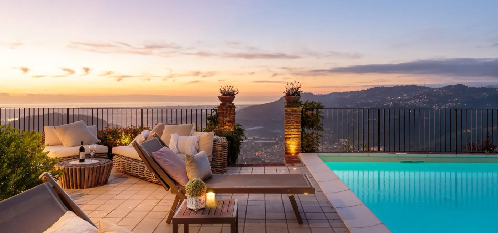
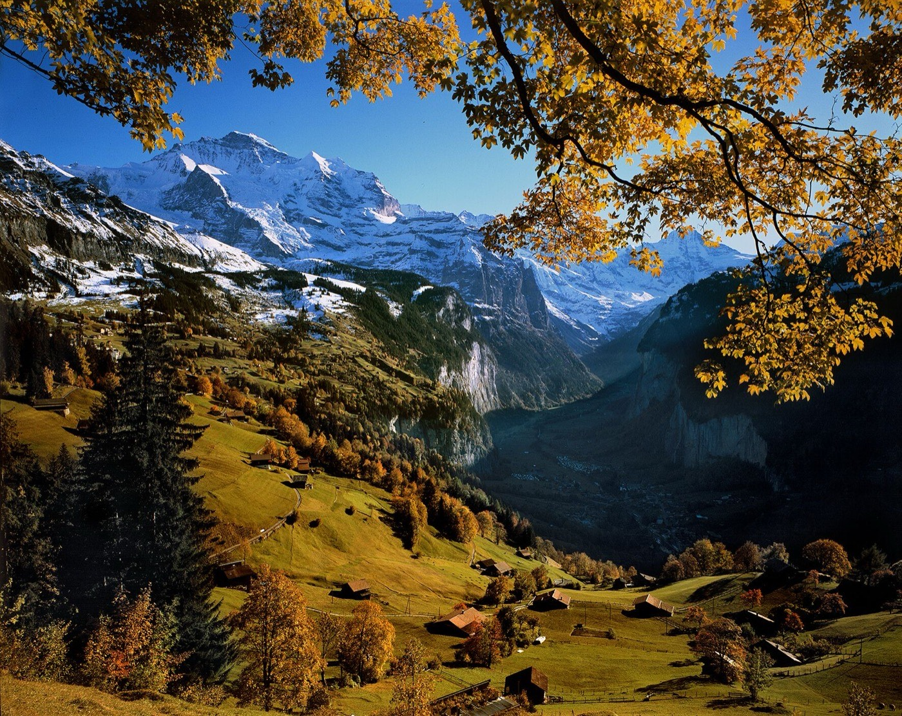
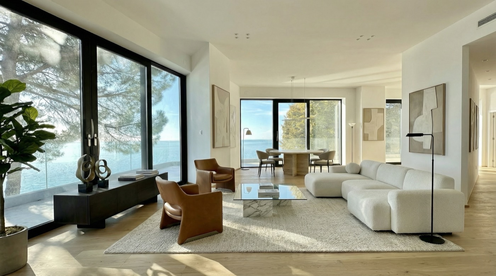

Owner & host
Villa Volpe
The highest-rated luxury villa on Lake Orta — Italy's hidden gem. Where I live the vacation-rental craft first-hand.
villa-volpe.comDatabase enrichment & data engineering — Trieste, Italy
Messy operational data, turned into clean, decision-ready databases.
Data engineering & analysis — databases, dashboards, internal apps and AI automation. I sharpened this craft running the data behind Trieste Villas (120 properties) and Villa Volpe, my own luxury rental on Lake Orta — and I'm the technical director of Vertical Sailing Tour, a tour operator I help run end to end. Forged in vacation rental, the same engineering applies to any data-heavy business.

The core is database enrichment — cleaning, structuring and connecting the data a business runs on. Everything else is built on that clean foundation.
Cleaning, structuring, deduplicating and enriching messy data into a single source of truth.
Turning PMS, channel and operational data into dashboards people actually use to decide.
No-code apps with AppSheet & Airtable — operations, housekeeping, check-in and reporting flows.
Websites and internal tools shipped end to end, plus Apps Script glue between systems.
Agentic AI and internal copilots that remove repetitive work and surface insight on demand.
Pricing strategy, channel mix and OTA performance — the rental know-how behind the data.
A chronological index of what I've built. Tap any role to open the full story.
The things I build, run and put my name on.
The highest-rated luxury villa on Lake Orta — Italy's hidden gem. Where I live the vacation-rental craft first-hand.
villa-volpe.com
A tour operator running climb-and-sail expeditions across the Mediterranean. I run the tech, the data and the operation behind every season.
verticalsailingtour.com
Short-term rental in Custoza. I built the website and the booking calendar.
metronecustoza.com
Vacation rental in Malta — a private consulting project on web, distribution and data.
damemalta.com
Web3 booking platform — minted the first Booking Hotel NFT in history.
tripscommunity.comMountains, wind and water. A few of the things that keep me sane.
Crew on Shockwave3 — Prosecco DOC Maxi Yacht. Read more

A barrel of ice water in the Alps, the Wim Hof way. Why ice works

Delivering Ancilla Domini through the Corinth Canal, Greece.

ARC 2016 — Las Palmas to Saint Lucia, 2,700 nm of open ocean.

I built a weather page for wingfoilers in Trieste. Open meteo

Certified. Happiest when it's deep and steep — Japan, 2018.

Chasing gusts past Isola Bella and the Borromean Islands.

Bora days on the Gulf of Trieste.

Hiking for lines under the Mont Blanc massif.

Climbing and hiking the islands we sail to — here on Marettimo.
Slow craft, knots and trees — nets woven between the pines.
I'm a consultant specialized in tech and — above all — databases. These are the companies that rely on that work today.

Digital & Data Consultant — I structure and enrich the databases behind 300+ luxury units in Tuscany, with dashboards, internal apps and AI automation on top.
luccaapartmentsandvillas.co.uk
Digital & Data Consultant — the data layer, reporting and booking automation behind 80 apartments in the Jungfrau region, Switzerland.
wengenapartments.com
Data & Database Enrichment — I lead the data layer behind 120 properties: one clean source of truth for operations, channels and revenue.
triestevillas.comAlso along the way: AJL Atelier · Seably · Barcolana · Marina Militare Nastro Rosa Tour · Trips Community · Bluewago.
Sitting on messy data and need it turned into something you can decide with — in vacation rental or any other business? Write me.
bebroggi@gmail.comData & Database Enrichment
I'm back with the company where I cut my teeth in property management — this time on the data side, leading the database layer behind a portfolio of 120 properties.
Digital & Data Consultant · Freelance, full remote
Two leading European vacation rental companies — Lucca Apartments & Villas (300+ units, 20M€+ gross revenue) and Wengen Apartments (80 units, 5M€+ gross revenue) — a combined 380+ managed units. I support both teams on data, tech and automation.
Technical Director
A tour operator running climb-and-sail expeditions across the Mediterranean — combining mountaineering and sailing into one trip. As technical director I run the tech, the data and the operation behind every season.
Consultant & Tech Specialist
AJL Atelier is a consulting firm focused on the vacation rental and short-term rental industry. I joined as a consultant and tech specialist, working with property managers and operators across multiple markets.
Business Developer
Seably is a B2B SaaS platform for maritime e-learning, serving shipping companies and seafarers worldwide. I wore several hats — business development, data and sponsorship.
Logistic Manager
An itinerant sailing event circumnavigating Italy, with a travelling village that sets up and tears down at each stopover. I ran the logistics of moving that village around the country.
Sports Director
Held every October in the Gulf of Trieste, Barcolana is the largest sailing regatta in the world. As Sports Director I owned the sporting side of an event with thousands of boats on a single start line.
Revenue & Channels Manager
Trieste Villas is a property management company. I led revenue and channel management and coordinated day-to-day rental operations across the portfolio.
Partner Manager · Company since sold
Bluewago was a sailing tour operator, since sold. As Partner Manager I built and managed both the supply side — skippers and itineraries — and the demand side — bookings and leads.